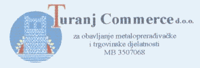

|
Kontakt
Ako imate bilo kakve primjedbe, pohvale, informacije, slike, ili bilo što
za što mislite da bi trebalo biti na ovim stranicama slobodno nas kontaktirajte.
U slučaju da imate još starih fotografija momčadi Croatie bili bismo zahvalni
da nam javite, pa da i njih dodamo kako bi ove stranice bile potpunije i sadržajnije.
Ako netko misli da je na ovim stranicama objavljeno nešto što ga na bilo
koji način vrijeđa, ili je autor nečega a protivi se objavljivanju tog
sadržaja na ovim stranicama neka mi se slobodno obrati, i sadržaj će biti
uklonjen (u slučaju da je to istina). Sve tekstove (osim vaterpolo pravila
i teksta o vaterpolu) i sve ilustracije i fotografije sam izradio sam
i ako želite slobodno ih kopirajte, snimajte ili koristite na bilo koji
drugi način. Ako netko želi bilo koju od fotografija na stranicama (osim
fotografija momčadi čiji ja nisam autor) neka mi pošalje e-mail
i ja ću mu je poslati u većoj rezoluciji i dimenzijama. Zahvalio bih se
Nikoli Dekoviću, prof. Zlatku Šimencu, Đoniju Roti, Danijeli Deković,
Ivanu Matkoviću i svima koji su mi pomogli pri sakupljanju sadržaja i
svojim savjetima.
Pošto vk Croatia Turanj nema nikakvih prihoda osim priloga sponzora i egzistira
na isključivo volonterskoj osnovi, entuzijazmu pojedinaca i razumijevanju
sponzora svaka pomoć je dobrodošla. Ako je bilo tko zainteresiran za to da
sponzorira klub ili mu na bilo koji drugi način pomogne, molimo da kontaktirate
predsjednika kluba.
Sponzori kluba:

|
|